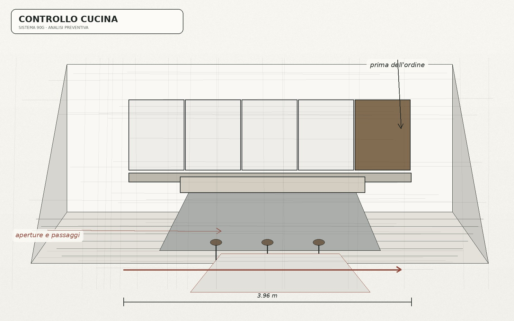

Scegliere / migliorare
Consulenza 90G · 97 €
Quando il problema principale è una decisione circoscritta: colori, materiali, top, finiture, maniglie, accessori, illuminazione o altri interventi che non richiedono una nuova soluzione distributiva.
Una cucina già installata
“Restyling” può significare due lavori molto diversi. Se devi scegliere come aggiornare materiali, colori o dettagli senza cambiare la distribuzione, può bastare Consulenza 90G. Se invece cambiano composizione, funzioni o organizzazione dello spazio, entra nell'ambito di Progetto Cucina 90G.
Non devi scegliere tu il servizio prima di spiegare cosa vuoi cambiare.

Scegliere / migliorare
Quando il problema principale è una decisione circoscritta: colori, materiali, top, finiture, maniglie, accessori, illuminazione o altri interventi che non richiedono una nuova soluzione distributiva.
Creare / modificare la soluzione
Quando il restyling cambia distribuzione, elementi principali, funzioni, passaggi, colonne, penisola, isola o rapporti tra le diverse parti della cucina.
Prima di decidere
Foto, misure disponibili e una descrizione di ciò che vuoi mantenere o modificare ci permettono di dirti quale percorso è coerente prima di qualsiasi acquisto.
Questo evita sia di vendere una consulenza quando serve realmente progettare, sia di far pagare un progetto quando basta una decisione specialistica circoscritta.
Materiale utile
Fotografie generali e di dettaglio, misure disponibili, indicazione di ciò che vuoi conservare e degli interventi che stai immaginando. Se mancano informazioni essenziali, te lo diciamo prima di proporre il servizio.
Cucina esistente
La valutazione iniziale è gratuita e serve a capire se il tuo caso richiede Consulenza 90G o Progetto Cucina 90G.